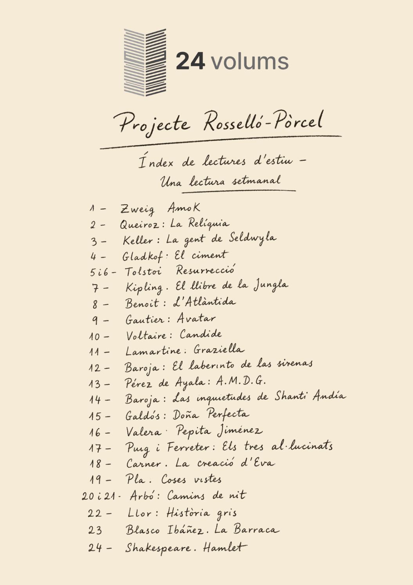

Aquest projecte pren com a inspiració directa la tasca d'estiu que el poeta i professor Bartomeu Rosselló-Pòrcel va deixar als seus alumnes de Batxillerat: llegir 24 volums durant l'estiu.
No es tractava només de llegir, sinó de fer-ho amb sentit crític. Aquesta aplicació recull aquell esperit històric i et convida a assumir el repte.
La llista original del mestre t'acompanyarà com a suggeriment, però tu tens la llibertat absoluta de substituir els llibres per crear la teva pròpia llista de 24 lectures essencials.